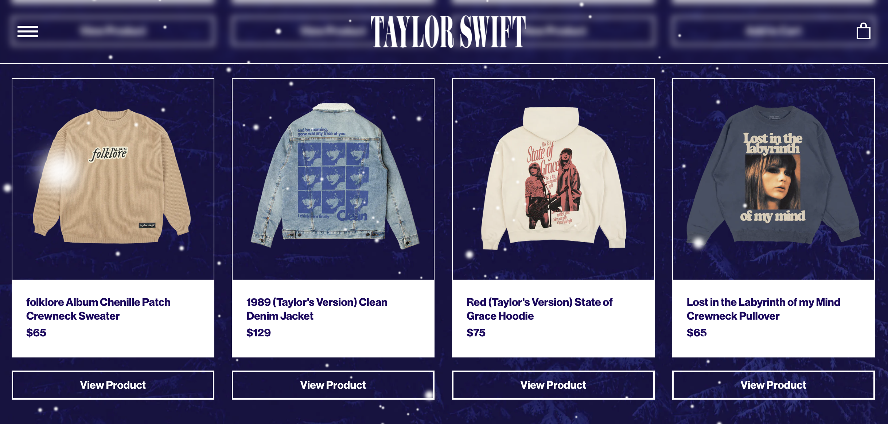

Taylor Swift's Updated Net Worth
International superstar Taylor Swift joined the billionaire's club this year, largely due to the success of her current tour.
In September, Bloomberg reported that Swift’s net worth is officially $1.1 billion. Though Swift's pockets are heavy, she's yet to beat Barbadian singer, businesswoman, actress and songwriter Rihanna, whose net worth is a staggering $1.7 billion as of December 2023. Fenty Beauty, the makeup company that Rihanna owns a 50% stake in, is worth $2.8 billion on its own.
Swift's money portfoilio has grown quickly over the past few years. In August 2017, Forbes reported that Swift’s net worth was $250 million, but it soared to $740 million in June 2023 after releasing Speak Now TV, 1989 TV, “The Eras Tour” movie and starting the Eras Tour.
Background
Taylor Alison Swift was born on Dec. 13, 1989 in West Reading, Pa. She began her career in 2004 with a move to Nashville after signing a music publishing deal with Sony/ATV at age 14. Record executive Scott Borchetta discovered Swift singing at a showcase at Nashville’s Bluebird Cafe in 2005, and in 2006, Swift signed with Borchetta’s Big Machine Records.
Albums
Swift released her debut album called Taylor Swift on Oct. 24, 2006. In 2008, she released Fearless, which became the top selling album of 2009 in the United States. From there, she put out eight more albums, four rerecorded ones, five extended plays and four live albums. She has sold an estimated 114 million album units.
When calculating this number, 1,250 premium streams (from a paid subscription like Spotify or Apple Music) from the same album, or 3,750 free streams from the same album, is equivalent to one album unit.
Swift's rerecorded albums have amassed a lot of attention, with fans eager to hear the singer's updated version of her old music as well as 'vault tracks', what Swift calls the handful of new songs she adds to each rerecorded album.

Collage made on Canva.
The rerecordings spawned after a disupte Swift got into with Borchetta, Big Machine’s founder, and the label's new owner, Scooter Braun.
Braun purchased Swift’s masters and proposed a deal that would force Swift to “earn” her old records by turning in new ones. “I learned about Scooter Braun’s purchase of my masters as it was announced to the world,” Swift wrote in an Instagram post in 2019.
Swift is now signed with Republic Records and has been rerecording her old music in order to gain ownership of it.
As for her albums' contributions to Swift's net worth, it’s difficult to determine exactly how much money artists make off of album sales and streams, but it's usually around 10-20% of each album sold. So, if a CD sells for $15, the artist makes between $1.50 and $3.00, according to HowStuffWorks. However, this number isn’t representative of every album sale, because of differences between retail and wholesale prices. Additionally, record contracts may withhold royalties, and managers and other contributors to the album also get a cut of the sales.
Merchandise
Another source of income for Swift lies in her merchandise. Swift offers a variety of merch on her website, taylorswift.com, as well as at her concerts. Shirt prices average around $45 and sweatshirts clock in between $60 and $85. Keychains, ornaments, tea cups, picture frames and other knick knacks are also offered online.
While Swift’s income statements are private, in 2014 Buzzfeed estimated Swift makes eight figures annually off of merchandise. With inflation and Swift’s soaring reputation, it’s likely she now makes tens of millions of dollars off of her merchandise every year.
1989 Albums and Tour
Swift has amassed a lot of money from her tours over the years.
Swift's "1989 World Tour" grossed $250.7 million across 85 shows, according to Billboard. It was the highest grossing concert tour of 2015. The 1989 album was released in 2014 and sold 1.287 million copies in its first week. The rerecorded version, 1989 Taylor's Version, was released on Oct. 27 and sold 1.359 million copies its first week. The album also had 375 million streams, the most streams garnered in one week out of all four of Swift's rerecorded albums.
Reputation Tour
Swift's "Reputation Stadium Tour" grossed $266.1 million in domestic revenue, according to Billboard. Even more money was generated when Netflix filmed and released the entire show, though the specific number attached to this deal is not available to the public.
Getty Images
"Miss Americana"
Swift sold "Miss Americana", a documentary that follows the singer's life and career over a couple of years, to Netflix for $25 million. The film was released on Jan. 31, 2020.
"The Eras Tour"


Original photos by Lia Gorbach
Swift began her most recent tour, "The Era's Tour", on March 17. The show is over 3 hours and 44 minutes long and includes music from all 10 of Swift’s albums that have been released over the past 17 years. The tour’s first 56 shows grossed $780 million, and Swift completed her 66th show on Nov. 26 out of the total 151 she has scheduled across the world.
Tickets for the tour sold for an average of $253 and more than 3 million fans have attended a show. Bloomberg estimates Swift has so far earned $370 million from Eras Tour merchandise and ticket sales. Babson College professor Peter Cohan predicts the tour will rake in $4.1 billion by its conclusion.
“If you just took Swift's cut, it would be larger than the yearly economic output of 42 countries. It would also be enough to send every American around $17," according to TMZ.
Tour Movie
“Taylor Swift: The Eras Tour” movie landed in AMC Theatres on Oct. 13, with adult tickets priced at $19.89. The concert film earned $92.8 million during its three-day debut weekend, making it the highest grossing concert film in history. The previous record was held by the 2011 film “Justin Bieber: Never Say Never”, with a lifetime gross of $73 million.
Swift’s tour production company produced the movie and Sam Wrench directed it. The film runs 165 minutes, and Swift recently announced that an extended version of the movie will be available to rent at home starting on Dec. 13.
Economic Impact
As fans flock to cities where Swift is playing, they spend an average of $1,300 on tickets, hotels and food, according to the U.S. Travel Association. "The Era's Tour" has boosted the economy in a way that is comparable to the Olympic Games and the FIFA World Cup. Economists have even coined the term 'Swiftonomics'.
There's no doubt that Swift will maintain her billionaire status. Her net worth is likely to continue soaring when her tour resumes on Feb. 7 in Tokyo, and after the highly-anticipated release of Reputation Taylor's Version.